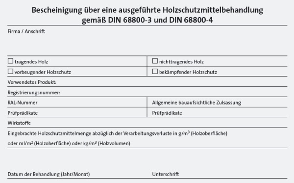

Vor der Bekämpfungsmaßnahme ist zunächst durch Fachleute oder Sachverständige die Art der Schadorganismen und der Umfang des Befalls festzustellen.
Die Bekämpfung darf nur von Fachfirmen durchgeführt werden.
Für die gewerbsmäßige Schädlingsbekämpfung mit sehr giftigen, giftigen und gesundheitsschädlichen Stoffen und Zubereitungen sowie Zubereitungen, bei denen die Stoffe oder Zubereitungen mit den genannten Gefährlichkeitsmerkmalen freigesetzt werden, ist gemäß Anhang III Nr. 4 Gefahrstoffverordnung ein Sachkundenachweis erforderlich. Außerdem muss dies der zuständigen Behörde mindestens sechs Wochen vor Aufnahme der ersten Tätigkeit mitgeteilt werden. Zur Sachkunde gehört eine anerkannte Prüfung oder Ausbildung sowie die regelmäßige Fortbildung.
Beim Einsatz von lösemittelhaltigen Produkten besteht Brand und Explosionsgefahr und es sind entsprechende Schutzmaßnahmen zu ergreifen – siehe Abschnitt „Brand- und Explosionsgefahren“. Zusätzlich sind die Besonderheiten vor Ort zu berücksichtigen, z.B. Lichtschalter und elektrische Leitungen abdecken und vor Kurzschluss schützen, keine Verarbeitung in der Nähe von Zündquellen (bei lösemittelhaltigen Produkten).
Nach der chemischen Bekämpfung müssen die Maßnahmen dokumentiert und an einer sichtbar bleibenden Stelle des Bauwerks in einer dauerhaften Form (z.B. in Folie) ausgehängt werden. Anzugeben sind Name und Anschrift des Unternehmens, angewendete bekämpfende und gegebenenfalls vorbeugende Holzschutzmittel mitWirkstoffen und Prüfzeichen, Einbringmengen und Jahr und Monat der Behandlung.
Vordrucke dieser sogenannten Dachkarten werden z.B. von Holzschutzmittel-Herstellern angeboten – Beispiel siehe unten.
